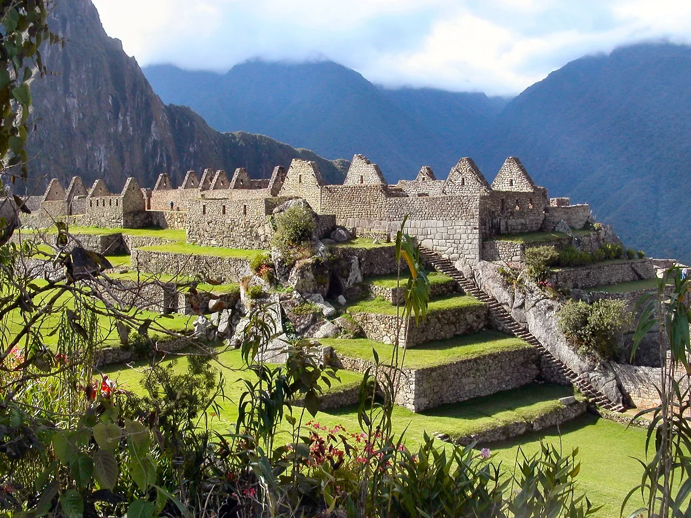
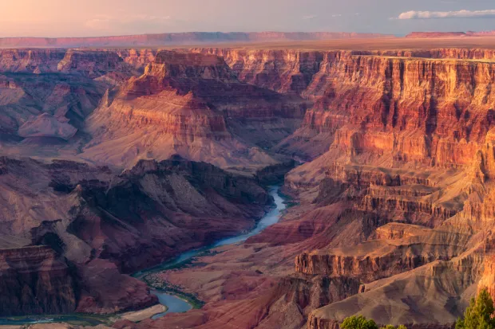
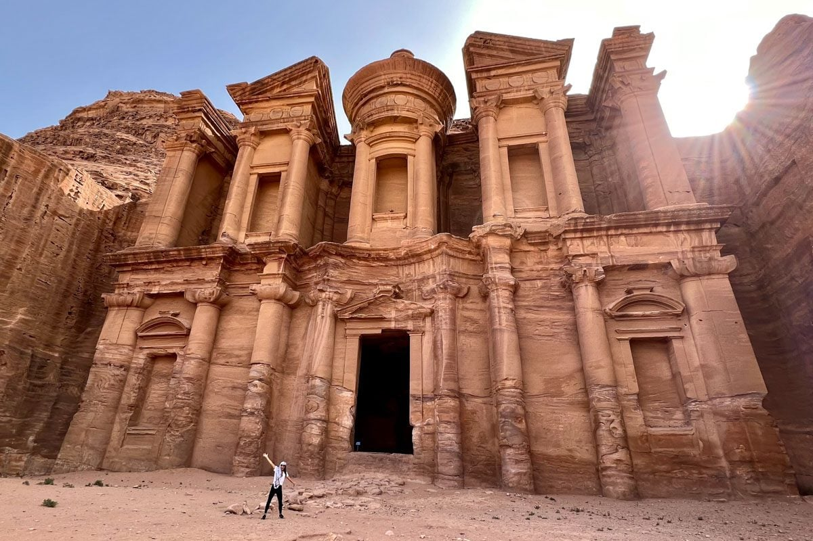
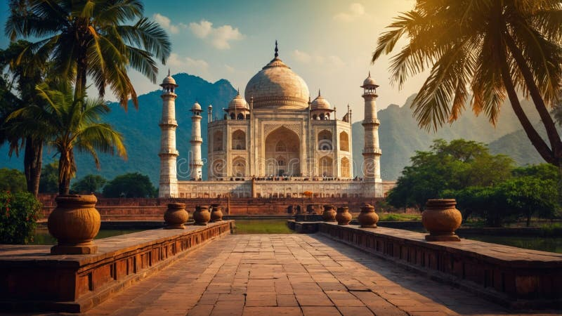

A breathtaking Incan citadel set high in the Andes, known for its stunning ruins, terraced landscapes, and rich history.An idyllic island famous for its white-washed buildings, crystal-clear waters, and dramatic sunsets, offering a perfect blend of beauty and culture.

A vast and awe-inspiring chasm carved by the Colorado River, showcasing stunning geological formations and breathtaking views.

An ancient city carved into rose-red cliffs, known for its archaeological significance and stunning structures like the Treasury.The world’s largest coral reef system, teeming with vibrant marine life, making it a paradise for snorkeling and diving enthusiasts.

A magnificent white marble mausoleum, renowned for its intricate architecture and romantic history, symbolizing love and beauty